0:00 0:05 Hello, everyone. And welcome to lecture 4 of CME 296. So before we start, I just want to say that those first three lectures were really the most technical and mathematically challenging. So in that sense, I'm still glad you're here.
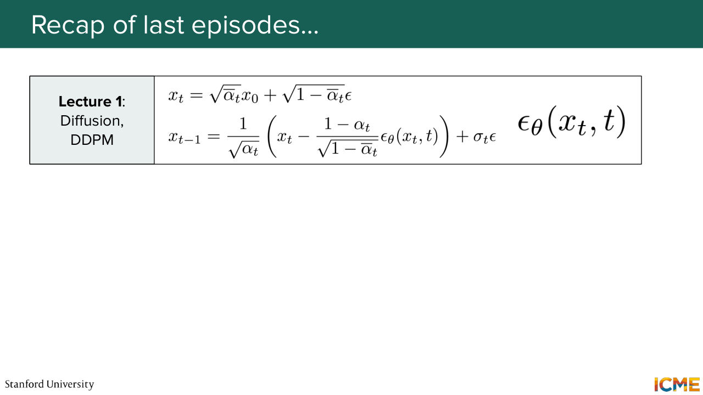
0:25 And I really hope that those three lectures gave you the intuition as to why we were going to use this generation paradigm. Because there are going to be used as building blocks for everything that we're going to see from now on. In particular, during the first three lectures, we focused on unconditional generation. And now, what we're going to see is how we can generate images with a condition which
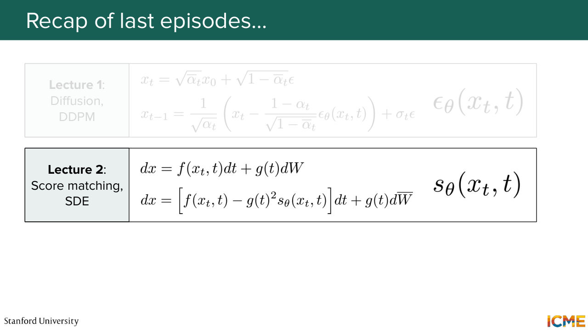
0:58 can be a user prompt, like input text, or an input image. And so in that sense, the title of today's lecture is multi-modal guided generation. With that, we're going to start. And as usual, I'm going to just recap what we did the previous times. So as I mentioned, the first three lectures
1:26 were mathematically challenging, and they were about seeing how we could generate images, what were the paradigms that we could use. So the first lecture was focused on the diffusion paradigm with DDPM, where we saw that we were taking clean images, that we were noising in a discrete way. And so here, we had this formula, which was a combination of a clean image and Gaussian noise
1:56 that we weighted with those coefficients. And what we saw with a bunch of math was that we could derive an expression that we could optimize in order to reconstruct those clean images that we've noised. And we ended up with a very nice expression, an L2 loss on the noise that was added. And in particular, if we wanted to denoise,
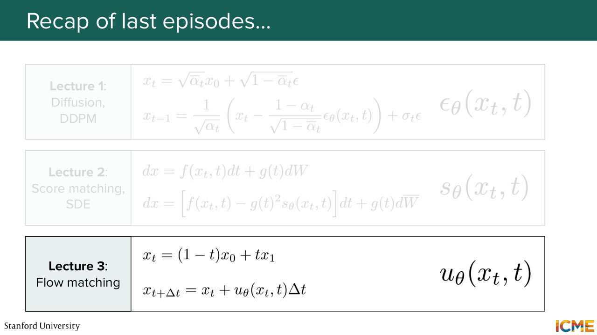
2:27 we had the following formula that allowed you to go from a step t to step t minus 1 using this model e theta, which was the predicted noise that was added. And so in that sense, it was parameterized with respect to the noise epsilon. Then in lecture 2, what we did was that we derived the continuous version of what we derived
2:57 in a discrete way in lecture 1. And we also saw a second paradigm, a second way of seeing things, which was score matching. And we saw that when we looked at these two ways of doing things, if we were to take the increment of time from t to t plus 1 and tend it to 0, we had a general expression of the increment in x, which would be as a function of dt,
3:32 the increment in time, and dw, which is the continuous version of adding noise. And in particular, you had these two terms. So on the left side, the drift term, and then on the right side was the diffusion term. And we saw that in order to reverse the noise that was added, so a.k.a. reverse process, we could use a result from theories
4:01 on stochastic differential equations, where we saw that we could derive the reverse process if we knew the score, which is why this formulation was parameterized as a function of the score. So here it's noted S of theta. And in lecture three, we saw that actually, we
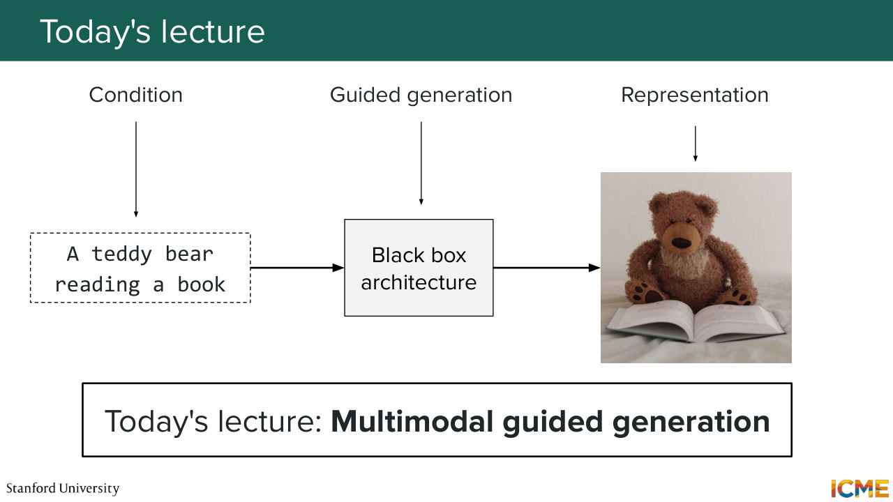
4:26 could think of this whole thing as a completely-- in a completely different way. And we can think of it as transporting a probability mass from an initial distribution up to a target distribution. And in that sense, we could express a noisy image as a combination of noise and sample from the target distribution. And all of what we had to do was to just predict the vector field, a.k.a.
4:58 The velocity, which was noted u of theta. But one thing that we kept silent was how we could actually represent all of these quantities, in particular xt, the representation of the image when it's noised at a given level, the noise itself.
5:28 All of these, we just assumed that there was some way of representing these in some n or d dimensional space. So one thing that we will do today is to see what space could actually be more appropriate for this kind of work. And then the second thing is, as you can see, the models that we need to estimate-- so epsilon theta, s
5:58 of theta, you have theta. There are only a function of denoised image and the time, but they're not a function of any condition, any user input. So this is also something that we're going to see, a.k.a. How can we incorporate a condition that could guide the generation towards what we want.
6:24 So this is the menu for today. So to recap, we're going to see three things. The first one is how can we represent those noisy images. The second thing that we're going to see is how to represent the conditions that we want as inputs. So for instance, the input text here, a Teddy bear reading a book that we want to generate an image for
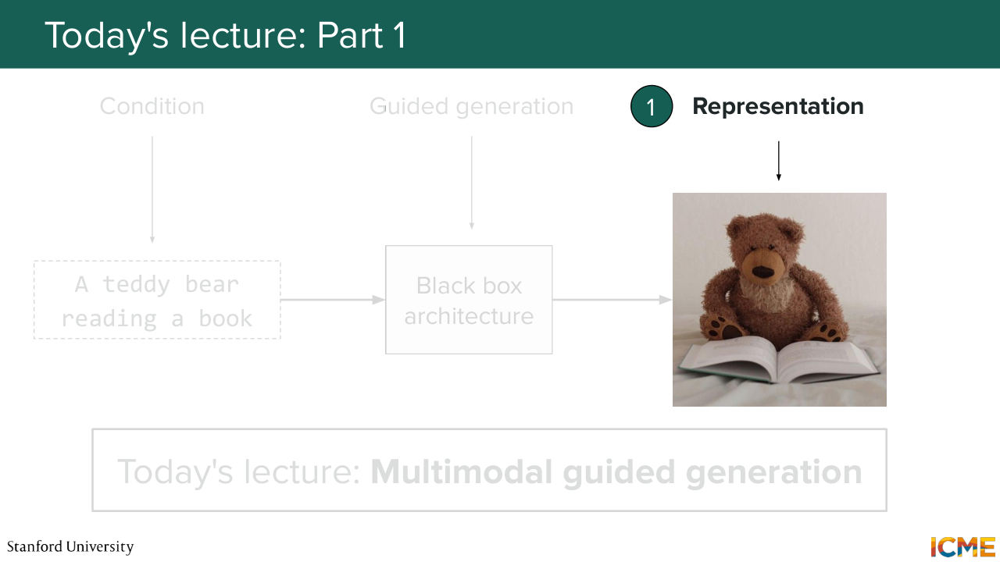
6:49 or an input image that you want to condition your generation for.
Shown briefly — discussed together with the adjacent slides.
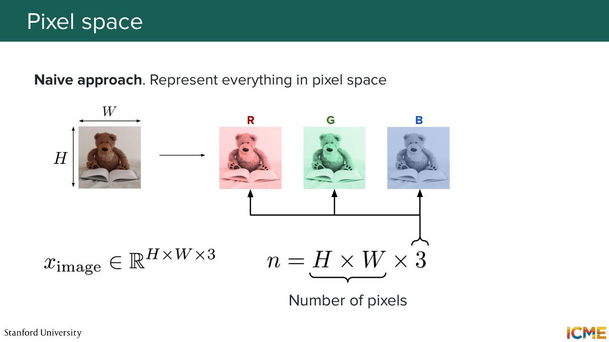
6:54 And then the third thing is how we can guide the generation process using that as an input. So we're going to start with number one, how to represent these noisy images.
7:12 And I'm going to start with the most natural approach that you could have when you see those images. We, as humans, we are very accustomed to seeing things in the pixel space. So here, if you take this image as an example, this image has a certain height H, certain width, W. So what you can do is to represent each pixel
7:42 as a function of the intensity of the color that composes it. And in particular, a very common representation is using R, so red, green, and blue. So in other words, you would have each pixel that would have three values, which would make up the color. And you would have these values cover all pixels of the image.
8:12 So you would have a dimension n that would be equal to 3 times the size, the number of pixels, which is h times w. And so you could represent your image as a tensor along the axis, the height, the width, and the number of channels here, which are three, which represents R, G, and B.
8:40 So this could be one way. But the big problem with that is that it's very high dimension. So if we take the example of a, quote, unquote, "regular image," so 1,024 times 1,024 pixels, then we would end up with a number of dimensions, which would be on the order of a million. So 10 to the power of 6. And if you think about it, this is just a lot of dimensions to consider in our training generation
9:17 paradigm algorithms, which are, of course, a function of the dimension in which you operate. So that's one very big drawback. The second drawback is if you look at your image, you actually see that you have a lot of redundancies. So if you see, for instance, in a given neighborhood of pixels, you have a lot of very similar values. So in a sense, you can consider this as a waste of dimensions.
9:51 So it's not very compact. And then the third thing is if you remember our whole first three lectures were about taking the image, and adding noise, and then just moving it in the space with respect to added noise. Well, here, if you take an image, and you were to move it slightly in that space
10:15 by adding some noise, you would actually obtain an image, a noisy image that would actually not be very meaningful. It would not mean anything. So in particular, so I'm not sure if you recall this nice graphs or charts, where you would see the areas of high density of your target
10:40 desired distribution. So here, what we want is clusters of observations that are likely to occur. But what we get is actually the thing on the right, which is a space with very spiky regions, where each spike represents an actual valid image. And that's not good. So for all these reasons, we're going
11:10 to just come up with a wish list of a space that we would like to have. So I'm going to go through that step by step. So the first one is the high dimensionality observation that I made. So here, what we want is a dimension that's more, quote, unquote, "tractable." So that's number one. Number two of our wish list is to have a representation that
11:37 does not have a lot of redundancies, that has some way of compacting things. So number 2 is compact representation. Number 3, regarding the representation not being meaningful, so here, we want a representation that is meaningful. And you can think of this when I say what meaningful means.
12:04 It's when you look at the space, and you're able to have clusters of regions where valid images happen. That's what I mean by meaningful space. So this is our wish list. So before we move ahead, I want to take the time to introduce two terminologies that are widely used in those papers.
12:33 So I prefer to define them now and clearly so that you what they refer to.
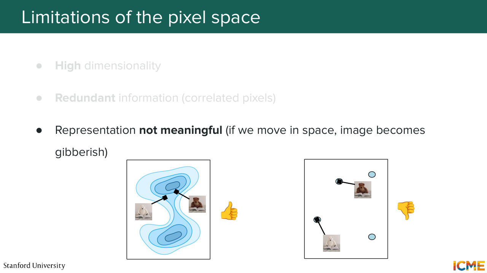
Shown briefly — discussed together with the adjacent slides.
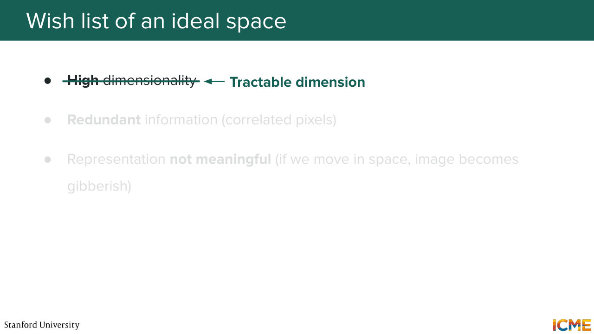
Shown briefly — discussed together with the adjacent slides.
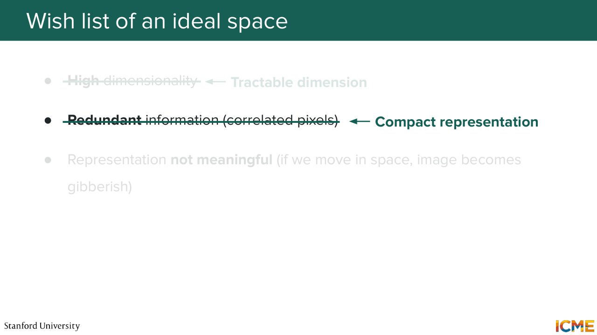
Shown briefly — discussed together with the adjacent slides.
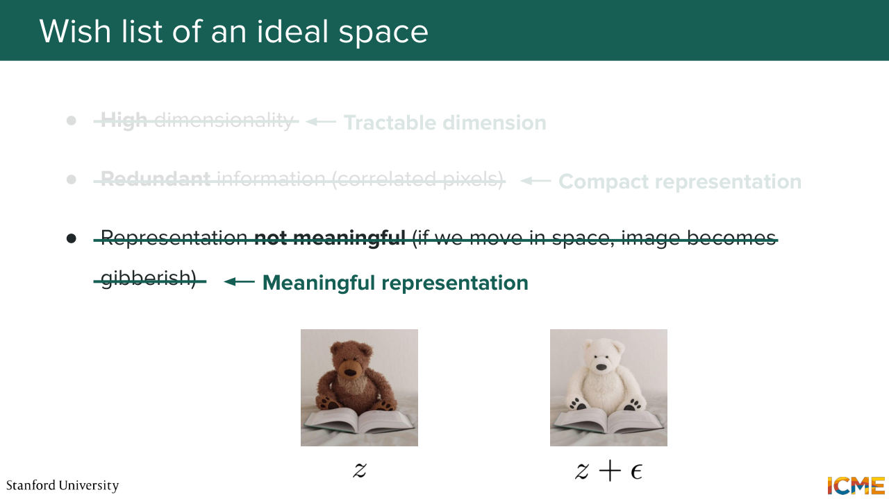
Shown briefly — discussed together with the adjacent slides.
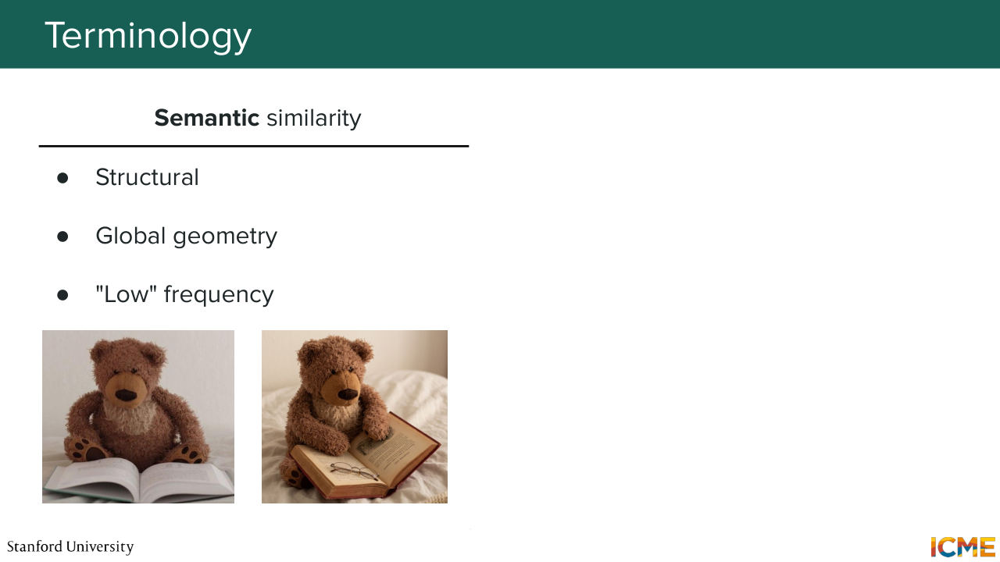
12:40 So you will see that there is a lot talk about semantic similarity. So what does semantic similarity mean? So semantic similarity of an image is something that refers to its global geometry to its overall structure. And in particular, what that means is if two images are semantically similar,
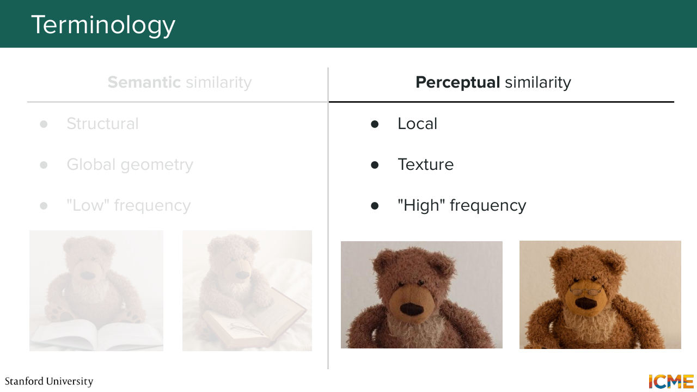
13:07 what that means is that they roughly represent the same thing. So here on the slide, you have on the left a Teddy bear that is reading a book. On the right, you have also a Teddy bear that is reading a book. They're not exactly aligned pixel wise, but they're semantically similar. So that's for semantic similarity. Now, you have another notation, which is perceptual similarity.
13:38 So this one refers to more of the local details of an image. More to the lower level texture of an image. And when you say that two images are perceptually similar, what that means is that to the human eye, they look the same. So for instance, you have, again, two pictures of a Teddy bear. So I'm not sure if you see the one on the right
14:06 has some little glasses. But it's perceptually very similar. Does that make sense, that distinction? Yeah. The reason why I say that is I'm going to use that terminology going forward, so I just want to make sure we all what these are.
14:28 So what are we doing? What we want is to come up with a space that
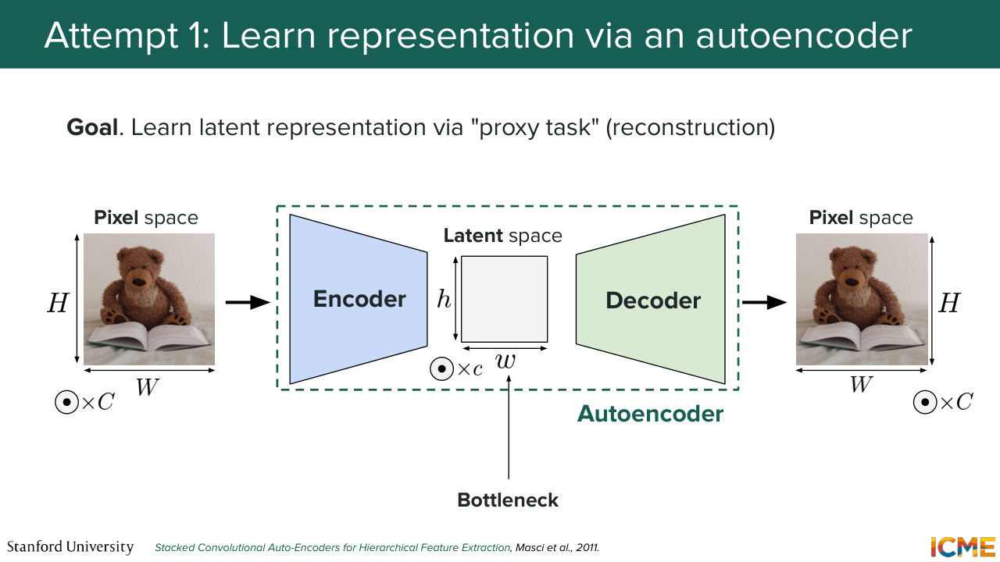
14:35 fulfills our wish list that we established before.
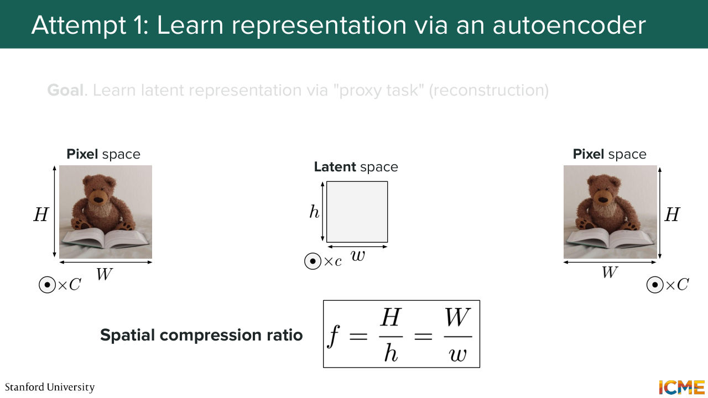
14:41 So here is our first attempt. So how about we take an image in the pixel space, and what we try to do is find a representation that's meaningful using the following architecture. So let's assume we take that image, and we put it into some model.
15:08 Let's call it an encoder that encodes the image and produces an output that is of lower dimensionality as the input. So here, we go from an image of size HW and number of channels, which, as you know, is equal to 3 in the pixel space because in the RGB
15:32 representation. And here, we end up with a latent representation of size lowercase h, lowercase w, and little c. And then what we do is we put that representation back to the decoder. So if we were to do that, our objective
15:57 is to recover the original image. So we don't want to lose any information by encoding our image into a lower dimensional space. So here, such a setup is called an autoencoder. So the only job of an autoencoder is to find a lower dimension representation that's called
16:26 the latent representation. And what it does us is take an image in the pixel space as input, compress it, and then decode it. And here, the task is making sure that what you get as output is the same as what you get as input. So you may think, OK, it's a very useless model, which
16:55 I agree, unless you're interested in the latent space, which we are. This is what we're interested in. So does this setup make sense? Cool. And then terminology wise, the latent space, like that part, is called the bottleneck just because we're forcing the model to rely on fewer dimensions, and we
17:22 want the model to still preserve the richness of the details that are present in the image. So let's see how we do that. But before we go, I want to introduce another notation that you also see a lot in papers, which is called the spatial compression ratio, which
17:46 is defined by the amount by which you go from Big H to little h. So it's just the ratio between the two. And that ratio is typically on the order of 8. So that's the order of magnitude that you should have in mind.
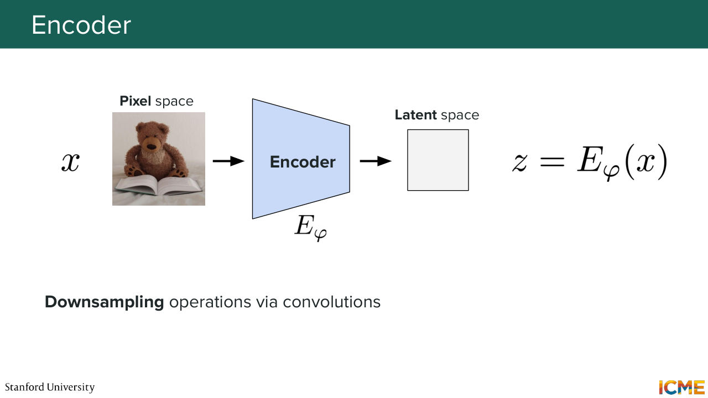
18:08 Cool. So let's see now based on what I told you how each component works. So in terms of what is input in the encoder, as we mentioned, we have our input image. Let's note it x that we put in our encoder, that we note E phi. And we get a latent representation z that is equal to E phi of x.
18:40 And so the way we would do that would be to use a network that contains some downsampling operations. So what that means is it allows us to go from a bigger dimension to a lower dimension. We're not going to go into too much details into what that network is because we're going to talk more about this in the next lecture.
19:07 But I just want to tell you roughly the two main operations that you can expect, which you may have seen. So the first one is convolutions. So who has heard of convolutions before?
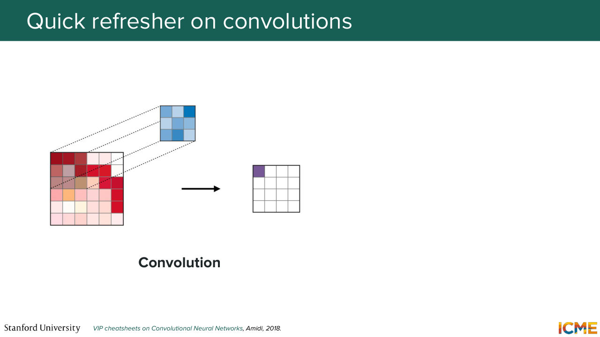
19:20 Yeah, everyone. So I can go fast. Convolutions is just a way to scan your image using a filter.
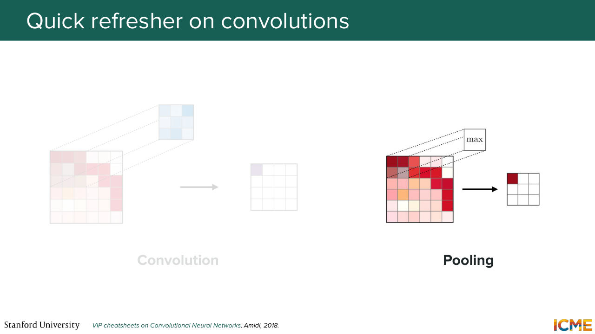
19:28 So the image is in red, the filter is in blue. And what you get is what we call an activation map or a feature map that is in purple. And then the second operation that you see in these kinds of networks is pooling. So pooling is a downsampling operator that allows you to either take the maximum of a given square,
19:55 or the average, or either max pooling or average pooling. And it allows you to introduce some spatial invariance just because you can aggregate the pixels to a higher
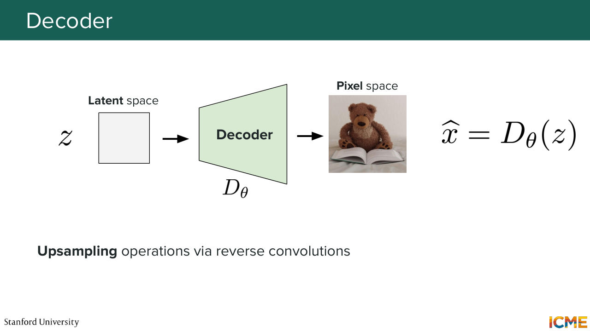
20:08 granularity. We're not going to go into too much detail, but these are just for reference. So when it comes to the decoder, what you would do is take the latent representation z into the decoder d theta. And you would get your reconstructed output x hat. So here, you would use upsampling operations, for instance reverse convolutions.
20:40 And the goal of this model is as much as possible,
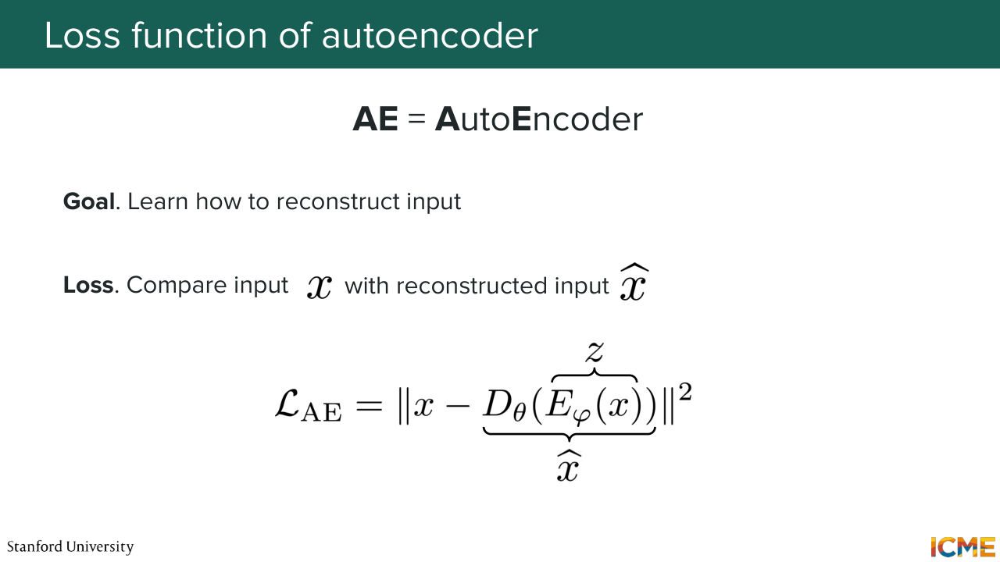
20:45 for your reconstructed output to be as close as possible to your input. So the loss function of such a model would be something along the lines of just an L2 regression between the input x and the reconstructed input x hat.
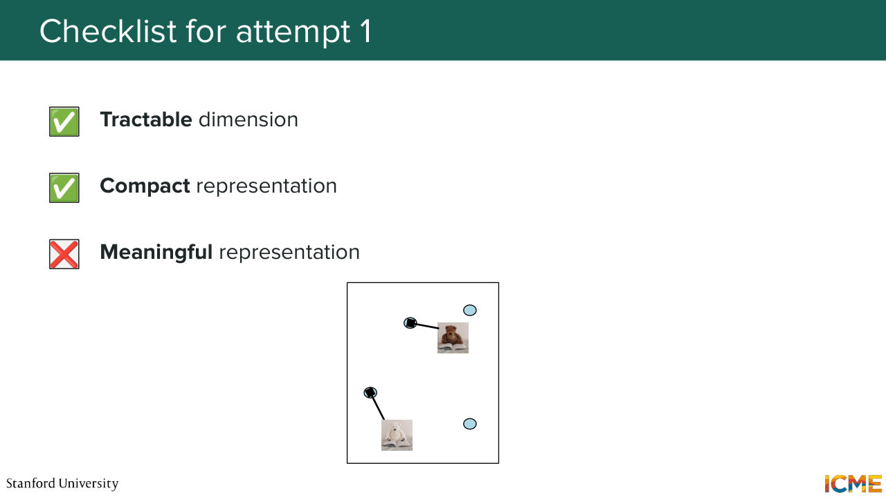
21:06 So I have a question for you. Do you think this model is a good model? 21:18 So this is what we're going to see now. So let's go through our checklist. First one is, OK., is the dimension more tractable? Yes, more tractable. Is the representation more compact? Yes, it's more compact. Is the representation meaningful?
21:38 Meaning do you have a nice shape in your latent space in the way we represent it?
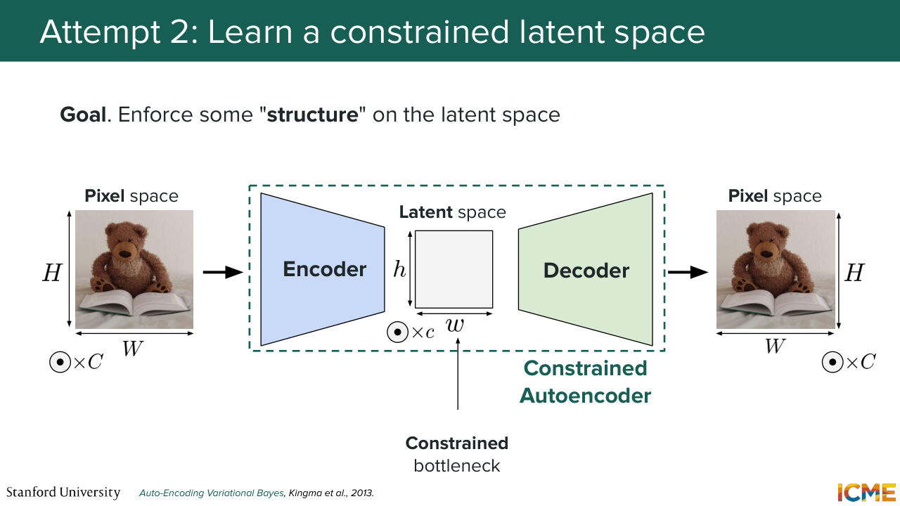
21:46 Yes, exactly. Not necessarily. Well, the reason for that is we have not
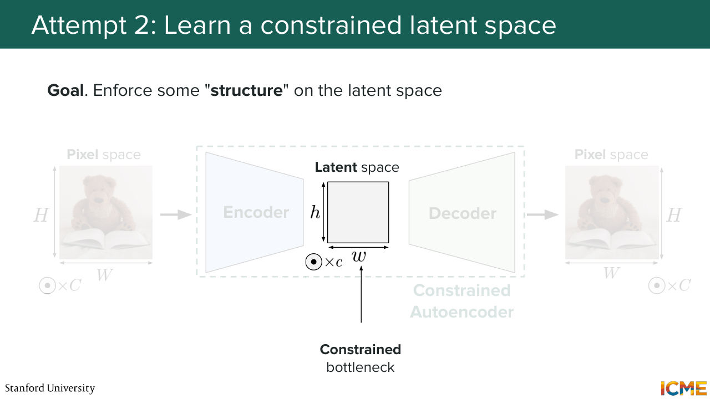
21:52 constrained our latent space to be structured in any particular way. So the model is just only incentivized to reconstruct the input as best as it can. And it really doesn't care what shape the latent space is. So you actually still end up with this kind of space, which is not good.
22:17 This is not good because your flow matching model, your diffusion model is just not able to learn very well in those spaces because, first of all, the representations are all over the place. And if you remember, one common thing with all of these generation paradigms is that you start from a normal distribution, like a standard normal distribution.
22:45 So you need a way for you to not get lost. So if everything is far apart, it just doesn't work. So that's not good. So let's go back to the drawing board, and let's see what we can change.
23:02 So we take our image, we compress it, and then we decompress it. Everything's perfect. Well, let's see what we can do in the latent space. Our goal here would be to, quote, unquote, "enforce" the latent space to have some structure. So this is our goal.
23:27 And we're going to see how we can do that. OK, let's go back to where we were. We take our input image x. But instead of just letting it through a standard encoder, what we will do is to actually not try to predict or generate the latent representation directly.
23:59 We will actually predict two things, the mean and the standard deviation of the distribution that it can be drawn from. So in other words, what we're going to see to say is instead of saying that one x corresponds to one latent representation,
24:26 we're going to say that 1x actually is mapped to some probability distribution, which sounds kind of weird, right? It's not very natural. But we're going to see why that mitigates the problem. So here, as a reminder, so the output of the encoder will not be just a latent vector.
24:53 It will be-- so the mean mu phi. And the variance sigma squared phi. So these are the two outputs of the encoder. And what we will say is that the latent representation of this distribution, this latent representation is actually drawn from this distribution. That's what we're going to say.
25:21 And we're going to say something else. So in a bit of an informal way, we're going to say that this distribution is going to be roughly forced to follow or to approximate another distribution. So it's not very mathematically rigorous.
25:44 We were going to see exactly how we can express that. But in your mind, I want you to know that this is a condition for us to structure the latent space in a way where we say the latent representation of an input x will be roughly in a given region of the space. We're going to force that, or we're going to incentivize the model to learn that.
26:11 So that's the idea.
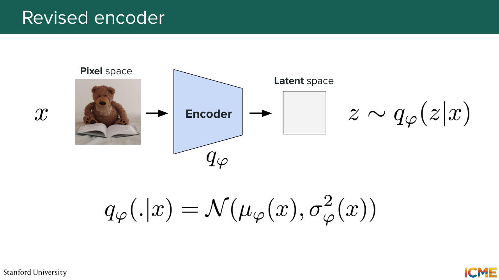
26:17 Cool. And yeah, this distribution is-- OK, you may have guessed it.
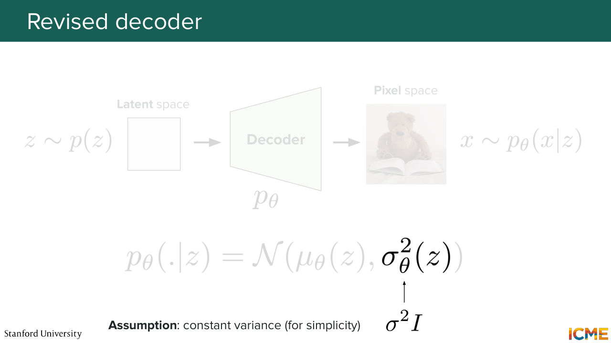
26:22 Again, standard normal distribution just because it's. It's a nice distribution with great properties. And by the way, this distribution, we're going to call it the prior distribution. So let's see how the decoder works. So let's assume we have put our input image into the encoder. We have predicted the mean. We have predicted the standard deviation. We have drawn a latent representation
26:54 from the distribution. So now, the decoding stage will be around taking that representation and passing it through the decoder which again will output two things, the mean new theta of this latent representation z and standard deviation. And what we're going to say is, again,
27:21 that the reconstructed image is going to be drawn from a probability distribution of these two parameters. Well, one thing that I want to say is actually, we're going to simplify this part of the problem a little bit. We're actually going to say that the variance is not something we're going to predict. We're just going to fix it to be constant just because there
27:53 is less impact in you making sure to introduce some variation in the output. Because in the pixel space, even if you add a little bit of noise, it's not going to change the image a whole lot. So that's why people just say, OK, we're going to take some variants that's constant fixed, and we're not going to predict that.
28:19 We're only going to predict the mean. We can draw from this distribution. But sometimes, people also just take the mean as the output. So this part is more of a detail. Yeah. So the question here is that whether the latency is drawn from the Gaussian or is drawn from the q-- the encoder here q phi z given x. So it's a great question. So this model, which we're going to see what the name is,
28:53 is both a model that we can use to learn the latent space, And so have a reconstruction task. But it's also something that can be interpreted as a generative model. So if your goal is to reconstruct the input, then your input here is going to be the z that you drew from that distribution. So it's going to be the latent representation of x.
29:20 But if your goal is to generate just a new image, then you would actually draw that z from the prior distribution. So the question is the encoder gives you a mean and a variance. It does not give you something deterministic exactly. It gives you a mean and a variance. And what you're doing is just drawing from that. So you-- yes, you draw from that.
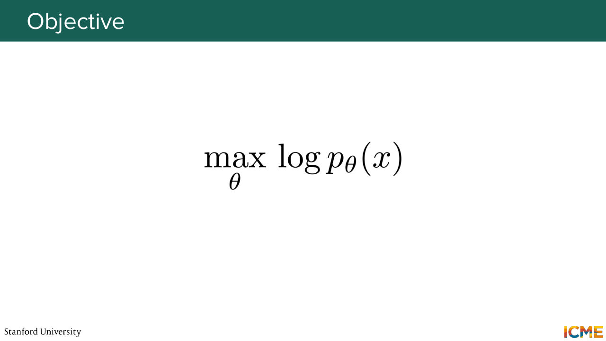
29:45 So great question. So the question is, well, if you have a generative model here, why would you bother.
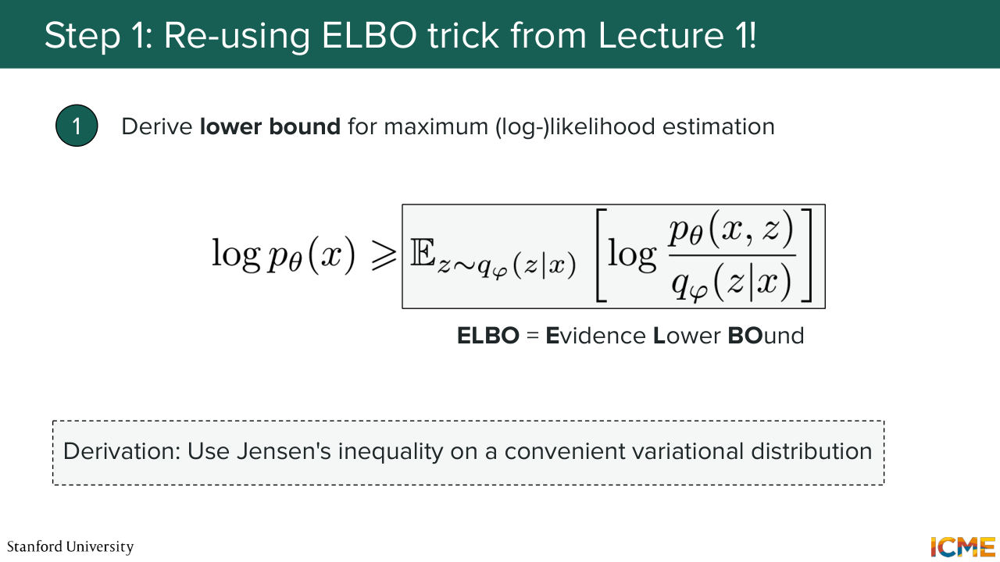
29:52 And just use diffusion, use flow matching, use all these things? It's a great question. You have a number of differences between the two which makes diffusion flow matching and score actually perform better than VAE. One of the differences is here, you only go from latent to pixel in just one step, whereas the other ones, you have several steps that just allows you
30:18 to put more compute in there. That's one reason. But there are some others that I hope we can get to if we get some time. But we're going to see the relationship between the two. Another question? Yeah. The question is, does the latent space look like a normal distribution? So there is something that makes it be "regularized," quote,
30:45 unquote, to be a normal distribution. It depends on a term that you can tweak with respect to a coefficient that we're going to see. And depending on the value of that coefficient, it may look more or less than a normal distribution. But we're going to see that. Cool. So the first time I saw this model, I was confused. You may be confused now, and I hope
31:13 what we're going to see will make you a bit less confused. So here, one thing that I want to say is in the autoencoder case, the loss function was pretty clear.
31:29 You would just try to estimate the reconstructed output in such a way that it's as close as possible to your input. But here, you have a bunch of distributions everywhere. There's not like an obvious way of expressing that without doing some math. So what I propose is that we derive the loss function
31:59 for this model, which I'm not sure if I can tell it now, but I'm going to tell it. It's called the variational autoencoder. And we're going to see what makes it variational. So if you remember, in a lot of cases, the way you derive a loss function is by doing maximum likelihood estimation.
32:28 So what does that mean? That means that you have some model of parameters theta. And what you want is to find the parameters theta that maximize the probability of your model seeing the data. That's what ML is. And that's what we're going to use to see how we can derive a loss function that
32:55 can help us learn theta. So in particular, what we want is to maximize the log of p theta of x. So I'm going to write it down. So what we want is to express log p theta of x with respect to something that we can compute. Because this, we cannot really compute something just by looking at it. So let's see how we can do that. So I'm going to just start with expressing p theta of x
33:34 as a function of something. So this model can be seen as a generative model that starts from a latent variable that you draw from what we call a prior distribution. So one idea of expressing p theta of x, if you remember lecture 1, we can consider
34:04 the joint probability distribution of p theta of z, a latent, and x, and sum across all latent z that led to x. We can do that, right? So what we say is that p theta of x is equal to this joint probability distribution of x, your image in pixel space, and z, your latent.
34:41 And you're just going to integrate over all possible latent representations. So this quantity is nothing else than you're drawing from a prior, so p of z, and then using your decoder to estimate x given z. So this quantity is the integral of your prior times
35:21 p theta of x given z, dz. P of z. Yeah, exactly. So the Gaussian. p theta x given z. Well, it's your model, your model that you want to find. The problem is that you need to compute this for all possible latent z.
35:53 And z is still high dimensional-- high dimensional vector. So this, if you were to compute this quantity for all z, it's actually not something that you can do. Because you would have to compute a lot of such quantities with given zs in order to get a good estimate. And it's just not something that you can do.
36:20 So do you remember a similar setting we had in lecture 1, which is the reason why we're going to see how we can find a convenient bound that could be maybe more tractable? Because so far, I have not used the fact that we also have a way to encode the input in order
36:46 to get latents that are more likely to be the ones that I want to consider here. So what I'm going to do now is to find-- so what I want to do first is to maximize this quantity. So I want to find theta that maximizes this quantity. So we saw just now that this quantity is not something that I can actually compute.
37:15 So what we're going to do is to find a lower bound that could be something that you could compute. And what we want to do is to maximize that lower bound in the hope that it will also maximize this in order to find our parameters theta. So let's do it. So you would have the following. So I'm going to just come here.
37:44 I would just say that p of x is equal to the integral of p of z times p theta of x given z, which is just at that point, I'm going to use the same trick that we did in lecture 1, which is to involve the output of the encoder. And here, it is q phi of z given x times q phi of z given x.
38:22 So what does this represent? So this represents the probability distribution of the zs that are likely to occur for this given x. Because here, in the original form, what you were doing was to just sum across all possible latent representations out there, but there are many of them. So it's like, you're in the ocean,
38:59 and someone tells you, OK, just look through the whole ocean. But the thing is, only a small subset of the zs are actually the ones that you want. They're actually only a subset of the zs that are the ones that are responsible for your x to appear, which is the reason why we're letting these q
39:25 phi of z given x pop up. And this expression, so this is equal to this. And this gets equal to just the expectation of p of z times p theta of x given z over q phi of z given x, where your z is drawn from q phi of z given x.
40:00 So why am I doing this whole thing? Because what I want to do is to take the log of this whole thing. I want to take the log of this whole thing
40:23 and do the same trick as we did for the DPM, which is the Jensen's inequality. And I'm going to say that it's the expectation of the log of this whole thing.
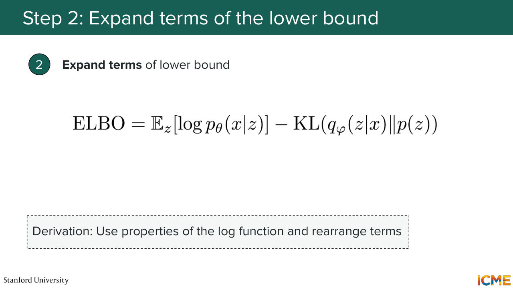
40:38 40:46 So I'm taking the log of this quantity, which I expressed as a function of the output given by the encoder for which I can find a lower bound. And now, we're going to see that this lower bound is actually something that is tractable.
41:12 We're going to see it now. So what I'm going to do is to just rewrite this expression. So we have-- so the expectation of the log of the whole thing, which is equal to the expectation of the log of p theta of x given z plus the expectation of--
41:49 so I'm going to be a little bit smart. I will say minus the expectation of the log of q phi of z given x over your prior distribution. So here, what I just did was I take the log of pz times p theta of x given z over q phi of z given x.
42:22 And what I did is I just-- I used the property of the log, which is logarithm of the product, is the sum of the logarithm of the terms. So I had this one pop up. And this one, I just rearranged. I put the denominator in the numerator, and I added the minus. And given that it's an expectation for both of these that are over z drawn from your encoder output, which
42:55 is q phi of z given x, this term is actually the KL divergence of q phi of z given x and your prior. 43:19 So what does this all mean? What this all means is in order to find the theta that maximizes this quantity,
43:33 we derived a lower bound. That is something that will see is tractable. So it's this expression, which we have divided into two terms. So the first one is expectation of the logarithm of p theta of x given z. And the other one is a KL divergence.
43:57 So we're going to see that these two terms are actually quite interpretable. The first one is actually a reconstruction term.
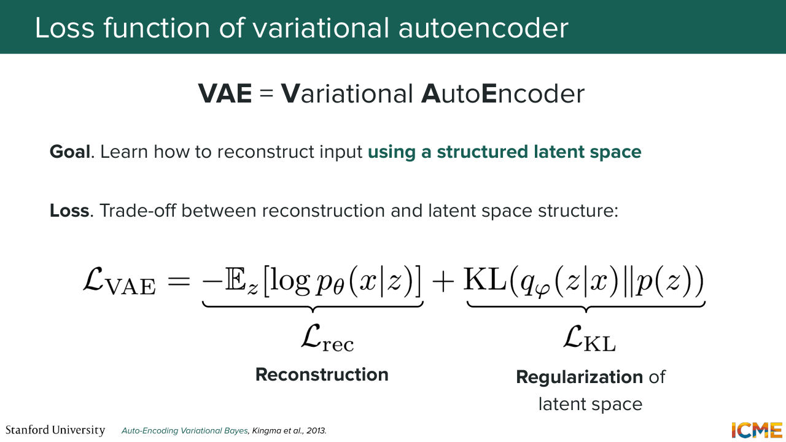
44:09 Because if you remember, p theta of x given z is a normal distribution with fixed variance. So we know the probability density analytically. So if you take the log of the probability density of a Gaussian, you actually end up with something super simple, which is the norm of x.
44:37 So the input and the reconstructed outputs. And then the second term is actually a term. So back to your question. It is a term that penalizes the distribution coming from your encoder being far from this fixed prior distribution.
45:00 So loss functions usually have a coefficient in front of this term to penalize more or less the fact of being far or close from this prior distribution. And depending on the coefficient there, you're going to have either something that will look like a normal distribution or not.
45:26 So that is the part of your loss that will allow you to do that. I'm looking at the time. I'm not super in advance, but I'm going to just pause for one minute if you have any questions. So the question is we're pushing the distribution of the encoder to be more of the normal distribution. So we want to do that to normalize the latent space,
45:51 but we don't want to do that too much. Otherwise, so the prior distribution is p of z. It doesn't care what x is. And in other words, if you push it too much towards something that is just static, it will just not consider the input at all. It will collapse. Yeah, so it's called posterior collapse.
46:18 So just one other question, and then I'll move on. Yeah. So the question is-- so we had this image with the little spikiness and that was the autoencoder, the standard autoencoder part. This one is actually structured in the latent space in a way that makes it more smooth, more well put together, and yes.
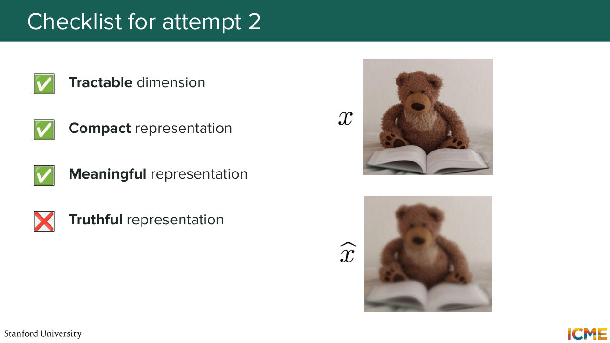
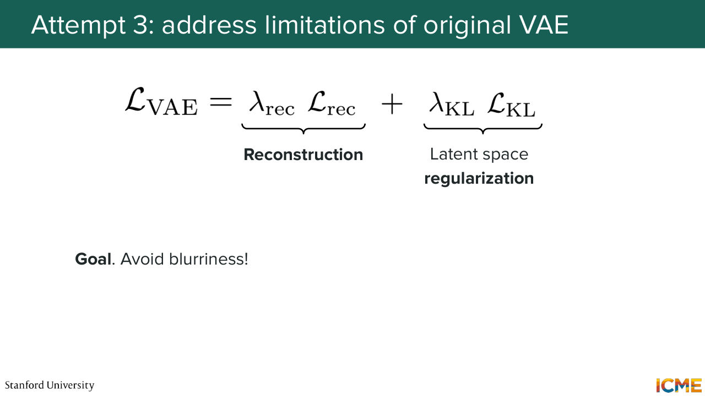
47:13 in an imperfect way. And what we actually obtain are more blurry images.
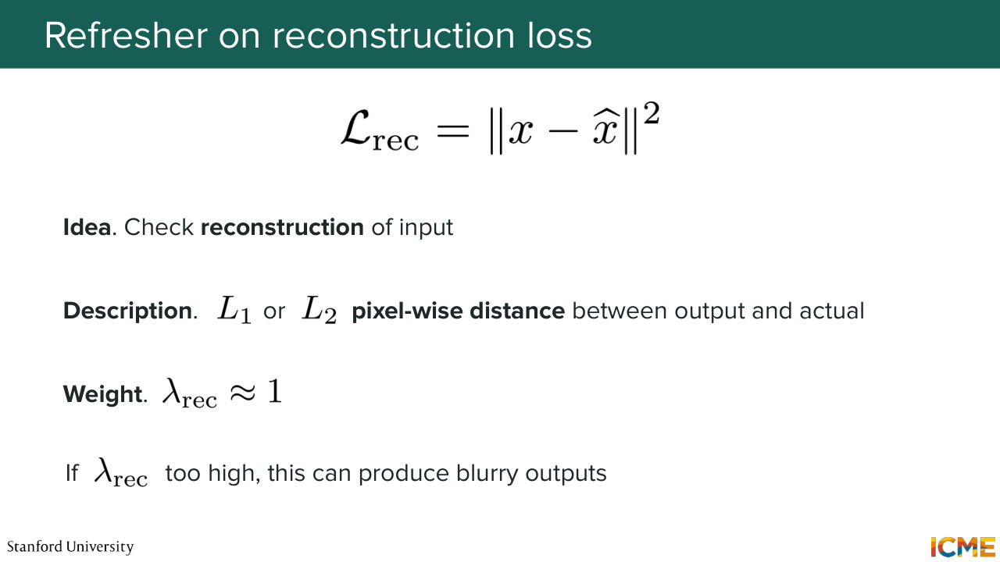
47:21 And so I'm hoping that in the next nine minutes, we're going to see why that is the case and how we can solve it. So first of all, let's look at the loss function that we have derived, which is composed of a reconstruction loss and a regularization loss.
47:44 So the reconstruction loss. What is it? We have not derived it here. But I am telling you that if you derive it, it is the pixel wise L2 between the input and the reconstructed output, the reconstructed input, sorry. And so what that means is if the generation is a little bit off
48:12 by a few pixels, it will actually get very penalized. Because the distance is pixel wise. So what ends up happening is the model tends to produce values that are more averaged, which produces this blurriness sensation that you're seeing. But then you will tell me, well, Afshin, the standard autoencoder
48:42 also had that loss. So why didn't it happen there? Well, the fact is, it also happened there, but it's even more pronounced here because of the structure of the model that we have defined,
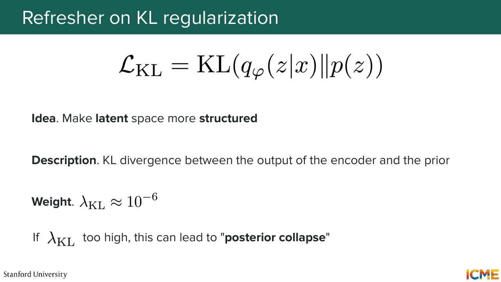
49:00 which is that the latent representation is not a one to one mapping with the input x, it is not. Instead, what we have said is a given input x maps to a probability distribution, like a set of probable points that could be actually latent representations of this x. So the model will introduce this uncertainty even more in the reconstruction that it will output.
49:33 And here, what we want to do is to combat that blurriness sensation. Because here, if we were to perform diffusion in the latent space, and if we were to decode the final output in the latent space, the last thing that we want is for our output to be blurry.
50:01 We do not want that. So now, we're going to see a couple of strategies
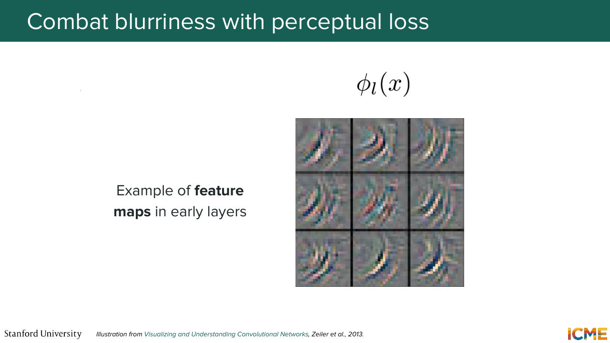
50:09 that will allow us to combat that blurriness artifact that we're seeing. And the first one is going to be about a kind of loss that's
50:22 called the perceptual loss. I'm going to say exactly what that means. So let's imagine you have your image x. The intuition here is we don't want the reconstructed output to be compared with the input pixel to pixel because it does not allow for little shifting
50:47 here and there. So what we want instead is to be able to compare the input and the reconstruction more in terms of similarity, that something that looks similar to you as a human, perceptually similar. So how can you do that? Well, there are some models out there
51:14 that there are convolutional based, for instance, that actually extract features from these images in their layers. And here, we refer them as feature maps. And one good thing-- one good thing about these feature maps is that they represent things from this image that have more of a spatial invariance compared to the original image.
51:48 So what does that mean? That means that if you have two images that are slightly shifted, slightly different, then their feature maps will actually not be that different. So the idea here is instead of comparing the pixel based images one to the other, we're going to compare their representation, their feature maps
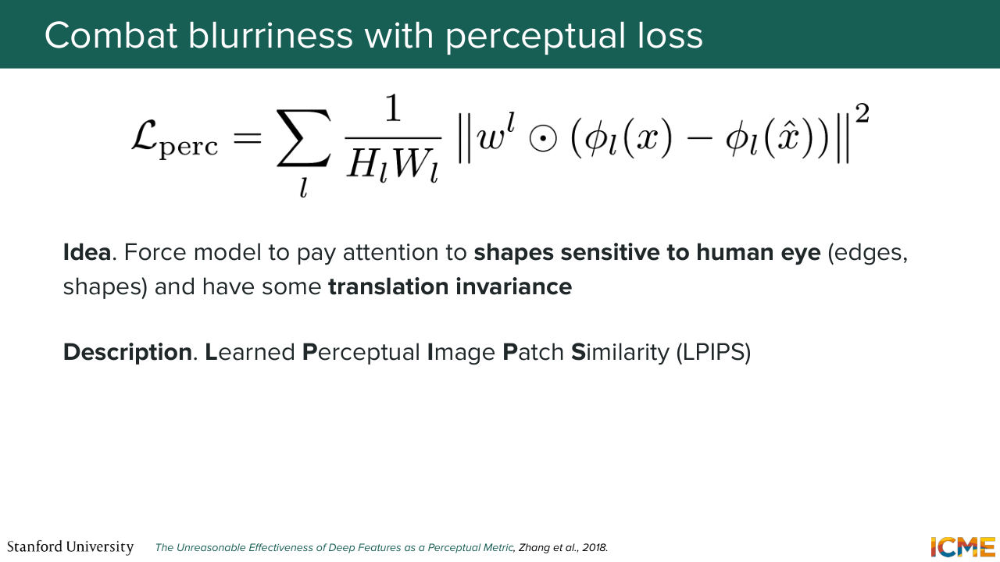
52:18 one to another. And I'm not sure if you've heard that loss, but there is a loss that's called LPIPS, so Learn Perceptual Image Patch Similarity. So it is a loss or it is a metric I should say, that is composed of the difference between the feature maps of two images, and that are weighted by a coefficient, which
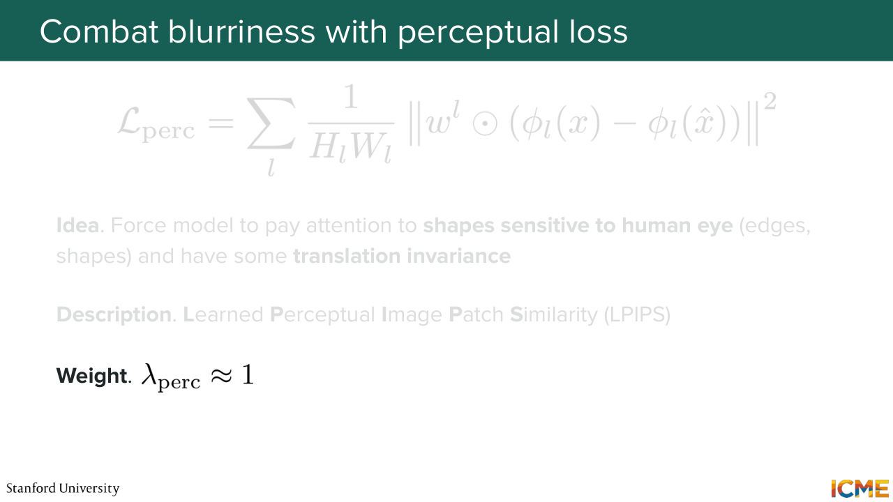
52:46 is here WL. There are coefficients that are tuned by the authors of this paper in order to match what humans consider as being perceptually similar. So long story short-- so by the way, the formula is scary, but it's not that big of a deal. We don't care about the whole thing. What we care about is that we're not comparing
53:13 images in the pixel space. We're comparing images between their feature maps. And what we're saying here is that the feature maps of two images better reflect their structure, their details, and are less sensitive to spatial differences. So that is one strategy. So one thing to note is that we would weight this loss
53:46 by some coefficients. You could think, OK, this loss is answering all our needs.
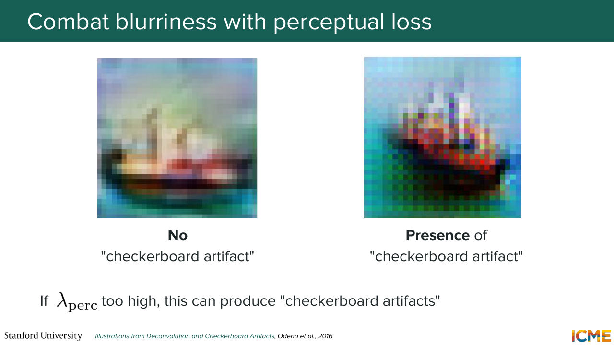
53:51 Let's have the weight for this part of the loss be super high. Well, if you do that, actually, there are some bad things that also happen. So we have what we call checkerboard artifacts, which as you can tell is like a grid like artifact in the image that is similar to this one. So you don't want to have too big of a weight either.
54:18 So that's one. And then a second strategy to combat blurriness is what we're going to see now. So the problem that we have is that the decoder of the VA
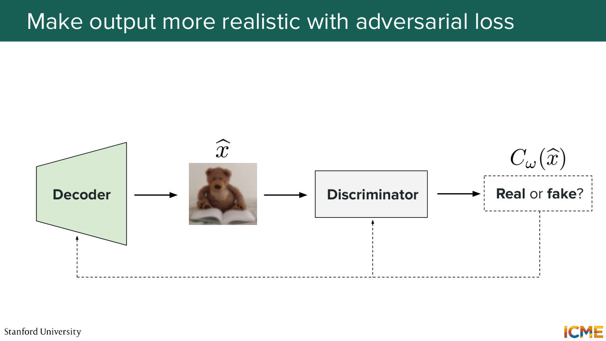
54:33 is outputting an image that is blurry. So one idea could be to ask another model to tell you whether the input image, so in this case, the blurry image is a real image or not? And based on that, what we would do is incentivize this other network called the discriminator, to distinguish outputs coming
55:04 from the decoder compared to real images, which would then flag blurry images as being fake. And we would penalize the decoder for generating images that would be flagged as fake by the discriminator. So have you heard of GANs before? So we don't have time to talk about them in detail, but I think this slide is summing up what is happening.
55:35 So you have two models that are competing with one another. The decoder that wants to produce images that the discriminator cannot distinguish from being fake, and the discriminator that wants to distinguish the output from the decoder compared to images from real life. And what this will do is incentivize the decoder to produce more realistic images.
56:09 And in doing so, it will help with removing that blurriness. So that is called adversarial loss. So what we saw was that the original loss of the VA, which we derived here, led to outputs that were too blurry.
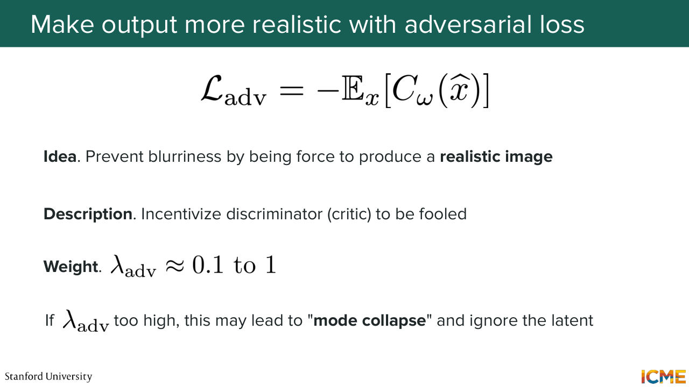
56:33 It was fulfilling all the wish list that we had, but it was not leading to a truthful reconstruction, which is the reason why we saw two different strategies to add to our loss, to counterbalance the tendency for the model to produce blurry outputs. So these are the perceptual loss and the adversarial loss.
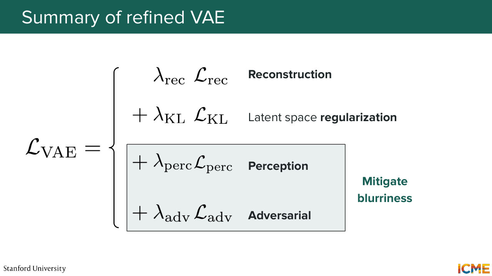
57:01 So before giving it to Sherwin, I could not let you without telling you
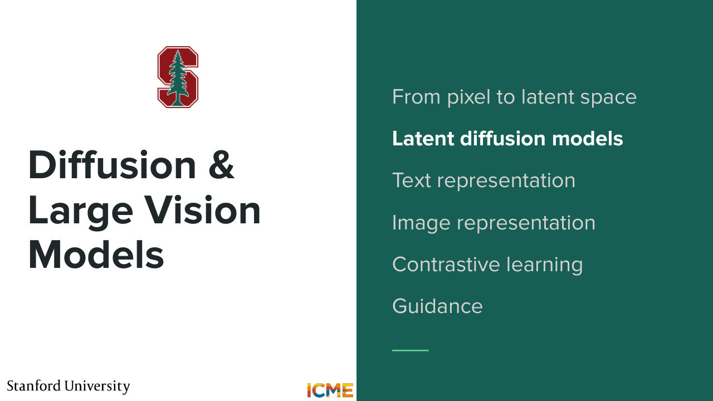
57:06 how this fits together with the diffusion models. So in particular, the reason why we did this whole thing is for us to use our diffusion flow matching model not in the pixel space, but in the latent space. Because computationally it's just cheaper and it's able to scale.
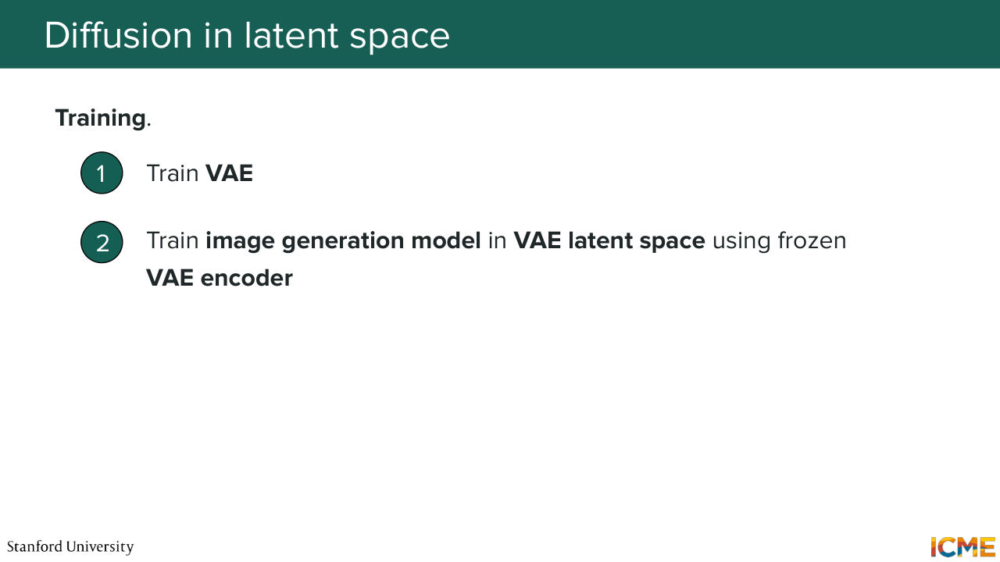
57:31 So now, we're going to see what our strategy for training and inference is. So for training, what we do is we first train the VA exactly like we saw. And then what we're going to do is to train our image generation model, like using for instance flow matching, in the latent space of the VA. And we're going to see how we do that.
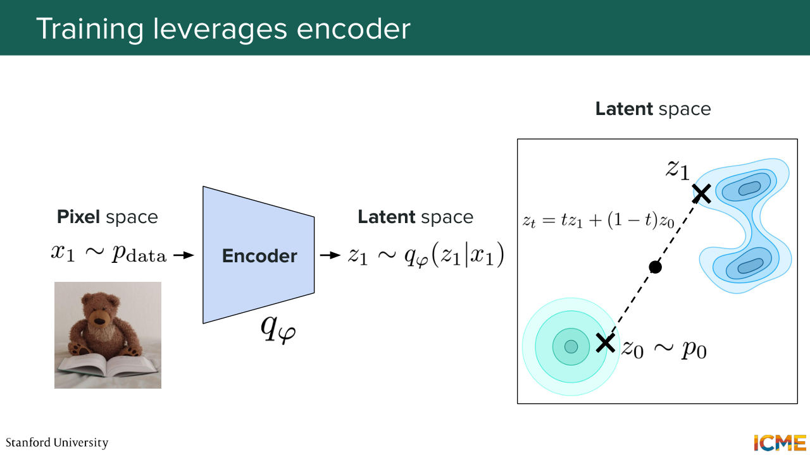
58:00 So let's suppose we have an image from our target data distribution. We pass it through the encoder. Our encoder gives us two quantities. So the mean and the standard deviation. And what we do is we sample from that distribution
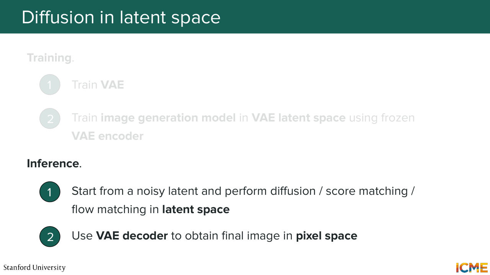
58:20 to get our latent representation. And then what happens is in our latent space, so we hopefully have a smoother latent space. We have our z1, which corresponds to the clean image. We sample from the noisy data distribution. And here, I'm just illustrating the case of flow matching, we have zt, which is a weighted combination of the two.
58:49 And what we do is we optimize for, let's say, our velocity like the l2 loss. We'll do that. This is for training. So how about inference? Well, let's assume that you have trained your model. Then now, what you want to do is to generate new images. So what you're going to do is to first sample
59:18 from an easy distribution in the latent space. So for instance, Gaussian noise. And you're going to use, for instance flow matching, the velocity that you have learned to solve it numerically and arrive, at let's say a point z1, which is the latent representation of your end trajectory. And what we're going to do is to use the VAE decoder to decode that output back to pixel space.
59:53 So let's see how it looks like. So this is your latent space that you have learned. You sample from the noisy distribution in that latent space. You solve numerically the ODE using the learned vector fields that we've trained right before. You obtain z1. The problem is, z1 to us, it doesn't mean anything because it's not in a pixel space. So what you do is you take that z1,
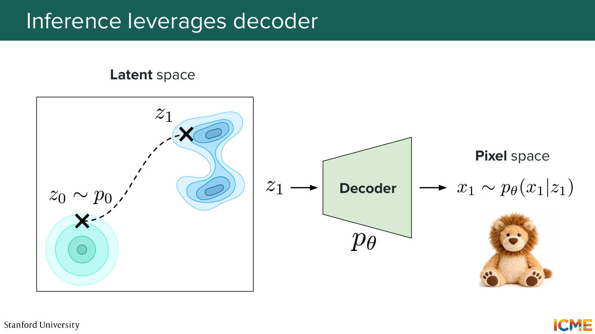
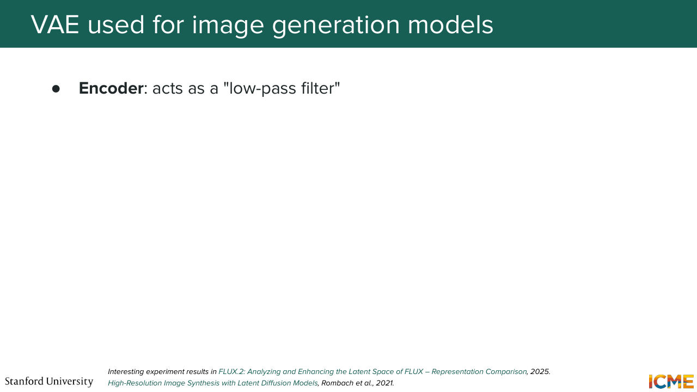
1:00:36 to find a latent space that is of lower dimension, that
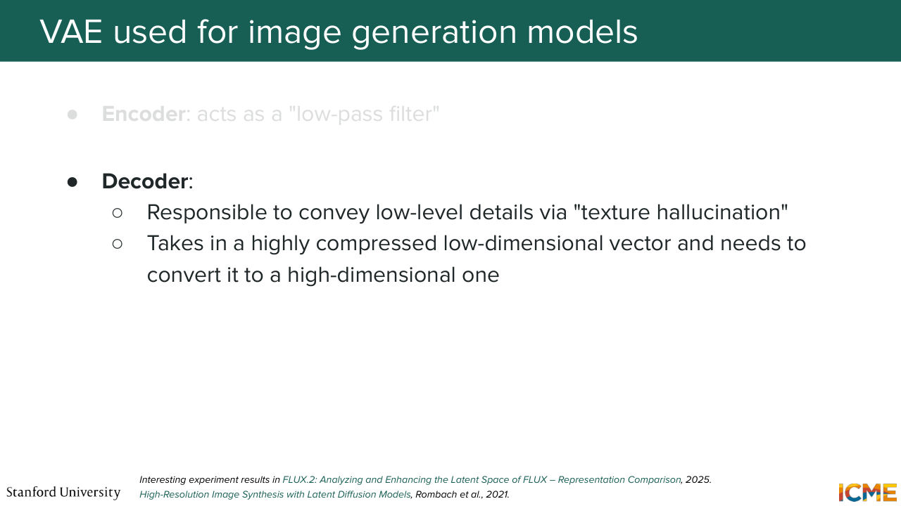
1:00:42 is smoother, and that is also able to preserve
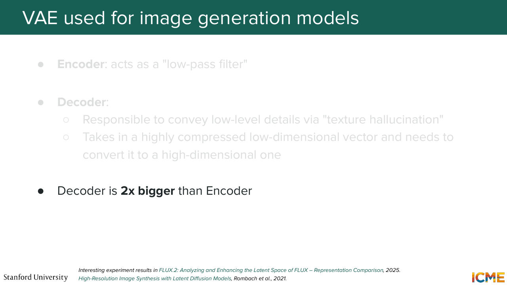
1:00:49 the details of your image. And so in particular, we say that the encoder acts as a low pass filter. Because what it does represents those images mostly based on their semantic similarity. So this is actually something we have not seen. But for a diffusion model to find all the details
1:01:20 in its exploration is much harder than finding something that is semantically what it wants to generate. So this is the reason why we're giving the decoder the task of conveying all the low level details, all the perceptual elements. And the role of the decoder is to take that latent representation and to make it an output that is full of details, that is realistic,
1:01:51 and that is matching what we want. And for that reason, you have the encoder and the decoder, which you would think is symmetric. But in practice, the VAEs that are used in conjunction with diffusion models are such that the decoder is actually bigger than the encoder. 1:02:20 Does that make sense? So we don't have a lot of time. So one thing that I put down there
1:02:27 is a longer form version of everything I mentioned in some very interesting articles, which I recommend reading, but not mandatory as part of this class, which is some results from flux 2, which is a text to image model, and the LDM paper, the Latent Diffusion Model paper that is at the bottom of the slide.
1:02:54 Yeah. So the question is, what should we think of the role of the encoder and the decoder? So at the end of the day, what you want is to have an easy time generating images, at the end of the day. And what you want is to not have too high of a computational burden for your diffusion model to operate.
1:03:18 So what you want is a latent space that is low in dimensionality, and that is easy for you to learn. So what does easy for you to learn mean? It means having a space that is not super spiky, but that is more smooth. And in particular, in order for you to obtain such a space, it is actually something that in practice, something that you can obtain if you focus on the semantic meaning
1:03:54 of these images, as opposed to capturing all the low level details. So in other words, what I'm saying is, even if two images are perceptually not very similar,
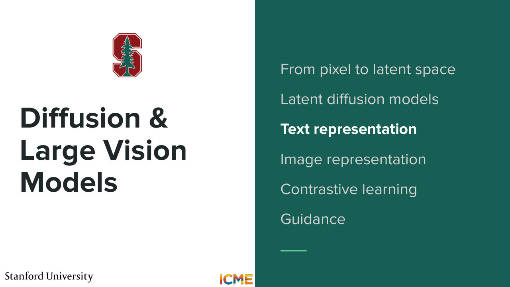
1:04:08 but if they represent the same thing, what we want for these images is to be located not too far from one another in the latent space. So we want the encoder to mostly capture the semantic meaning. So the encoder, what we want is to make the job of the diffusion model easy. And so this is the learnability. You will see in those paper, learnability.
1:04:34 So once you have images that are semantically similar, that are close to one another, you do your diffusion process. You obtain, let's say a point that you say, OK, this is the latent representation that I want to have in the pixel space. So now, the job of your decoder is to make sure that all the details that you want to have in this final image are there.
1:05:03 So in that sense, in contrast to the encoder, the decoders job is to make sure all the perceptual details are present in the final decoded image in the pixel space. So in that sense, you have these two different roles of the encoder and the decoder. So you want your diffusion model to have an easy time learning this thing, and you want a space that has some semantic information, which is what
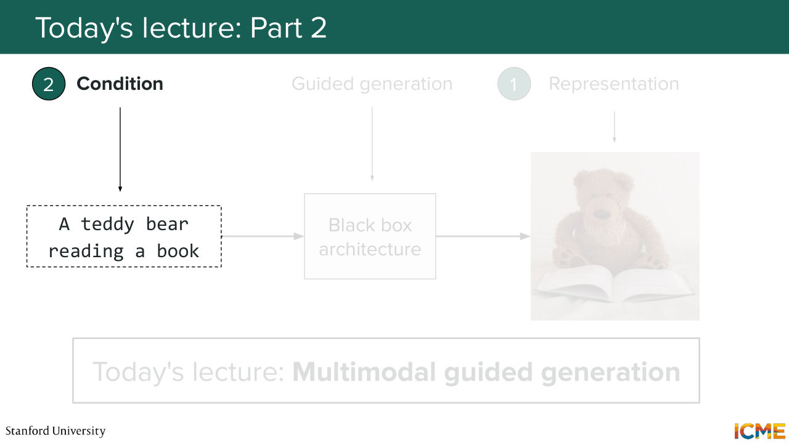
1:05:34 I mentioned the encoder can do. But what you want, at the end of the day, is to have an image that contains the details that you want, and that part is mostly something that decoder can help with in the decoding stage. OK, I'm 10 minutes over time, but with that, I'll give it to Sherwin.
1:05:58 Thank you, Afshin. So now, we're going to see together how to represent the conditions that we have at the input of this generation models. So the first kind of condition that we can have
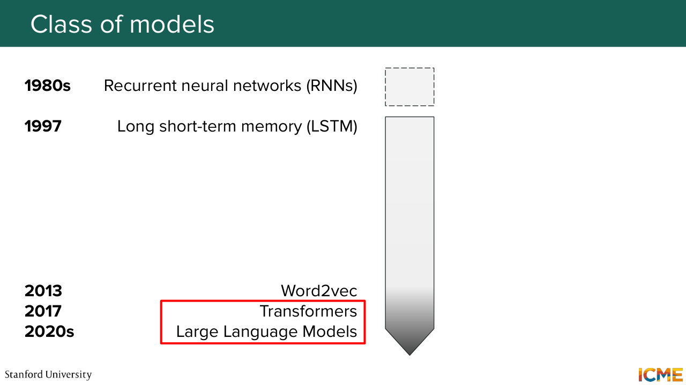
1:06:11 is the text one. So the text world, when it comes to representing embeddings has a long history. And I'm not going to go through the whole history of how we represent embeddings. I'm just going to focus on how people do it today. And the way they do it is with transformer-based architectures.
1:06:33 So let's first see how we can decompose the input sentence. So we have this concept called tokenization, which is the practice of decomposing any piece of text into atomic components. So you can have something that operates at an arbitrary level, word level, subword level
1:06:58 or character level. And a software level is usually algorithms that learn how to best decompose the tokens with respect to the data by focusing a vocabulary budget on those tokens that most frequently occur. And the tokenization technique that's most used these days is subword. But for simplicity, the one that you're
1:07:28 going to see in the slides is more towards arbitrary, but it's just for representation purposes. So who knows about transformers? OK, so most of you.
1:07:40 So there is a sister course that talks about transformers at length. I'm not going to talk about transformers at length, but just give the main pieces of information that you should know. So it is an encoder, decoder architecture that is centered on the concept of extension. And it came out in 2017. And most of the language models that you see today are based off of it. Even vision models, you have many of them
1:08:11 that are based on the transformer. And the good thing about it that made it work well is that it's inductive biases are based on the concept of attention that proved to be generalizable. And let's focus now on this concept of attention.
1:08:30 So if we had to summarize in a single sentence what it is, it is the practice of representing
1:08:38 a given piece of input as a function of all the others. And here, with the example, a cute Teddy bear is reading, if we want to represent in the space of attention the token Teddy bear, what we do is that we have embeddings for all these tokens. You have learnable matrices that will turn them into the space of queries, q, keys, k, and values, v.
1:09:08 And what you're going to learn is a distribution of keys--
1:09:13 of this key over keys. And the weights that you obtain are going to be those that you place on the corresponding values. So in summary, you're able to represent the embedding of Teddy bear with respect to the others in this sentence in that way. And you can write this down in matrix form, which is this softmax term that represents this probability
1:09:42 distribution. So the square root of DK is just a normalizing constant that prevents the sum from becoming too large. So the dimension of these queries and keys. And multiplied by the value, which carries the embedding of the values. So you can find this attention layer at three different locations. So two of them are self-attention layers.
1:10:12 So in the encoder and another one masked self-attention, which conveys the fact that tokens can attend only on those that were predicted before. And then you have another layer, where attention occurs, which is called cross attention, which will make these queries attend on other encoded keys
1:10:37 and values. So this is the high level. And in just a few words, the main components
1:10:45 is that your input tokens are converted into embeddings with a learnable layer. You add some information regarding the position of your tokens. Then you make it through or go through an encoder that will apply this concept of attention
1:11:03 and also add on top of it some learnable mechanism to add some complexity for each tokens representation, which
1:11:15 is those feedforward network. And then the decoder level, when you want to generate,
1:11:22 let's say a sentence, you start with some placeholder token that you-- for which you add position embeddings as well, that you self-attention and then perform cross-attention with respect to your encoders tokens. And then you also have feedforward there
1:11:42 to finally obtain your output. So I'm telling you all that to mention
1:11:50 that there are locations where embeddings can be extracted out of all of these. So if you use the encoder part of the network, you can find the ends of the encoders, a location where you have an encoded meaning of your inputs tokens.
Shown briefly — discussed together with the adjacent slides.
Shown briefly — discussed together with the adjacent slides.
1:12:11 And this is typically one of those locations, where you could say these are the embeddings of my input.
1:12:36 So all these token representations are just numbers. And you could well represent these numbers. You can associate them with patches of images. And this is what the ViT vision transformer paper does, which follows the same principle. But instead of learning embeddings on tokens, you learn embeddings of on patches of images. So everything stays the same.
1:13:10 And you can perform tasks, such as image classification with it.
1:13:19 And something that I haven't done in the tech space that we can do here together in this image world, is to see how these pieces come together in this example of a Teddy bear reading a book. So here, you decompose your image into these patches that we mentioned. Each of these patches, you have a learnable layer that gives you an initial representation of what
1:13:44 they mean. So in the case of text, you would have a dictionary of tokens that are mapped to embeddings. But here, you have something that is more continuous. So you can have a linear layer. You can have a convolutional layer. You can have everything you want. So you have something at that stage
1:14:04 that gives a representation of these patches. And then in a classification setting, you have a token.
1:14:13 So for example here, CLS that will carry information regarding the class of your image that you want to predict.
1:14:22 So each of these can be represented by embeddings. And we mentioned that we have position information encoded in them. And next class, we're going to see more about position encoding and all of this. So I'm not going to expand too much. So you have a representation for each of these patches of your input that you then feed your VIT.
1:14:53 And exactly, as we mentioned, at the output of the encoder, you can locate one specific embedding
1:15:02 that carries the semantic information of your input image. So here, it would be the output corresponding to the CLS token
1:15:13 that here, you project to learn a classification task for example. But let's say you are at a representation
1:15:21 stage of your workflow. You would just take the embedding
1:15:26 that you see in orange at the top as your representation of the image.
1:15:31 OK, great. So something that I didn't tell you is that for texts,
1:15:41 doing that process is cheap in data because the task that we use to learn these models is self-supervised by nature. We anchor on next token prediction in the world of text, and you have a bunch of text in the internet. It's easy to have such data, and it's easy to learn. But in the image world, if you want to handcraft a similar task that is as meaningful as what
1:16:11 we have in the text world, we have a bit more trouble. One of these candidates that I just shown is the classification task, for example, for which you need to gather labels. So it's quite expensive. And I just want to say that one follow up work that works on embedding of images that we're not going to see in details today is Dino self-distillation
1:16:42 with no Labels for which the concept is to have a teacher and a student model that receive the different kinds of inputs. And they aim at learning similar probability distribution in the output that are prototypes. So I think it's a very interesting paper to see how we can build representations out of no labels, just out of the images themselves.
1:17:12 So OK.
1:17:17 Great. So now, we went through how we can represent text and images. So did everything make sense so far? So we went slightly fast, but I just want to make sure we got the gist out of it. Yeah, the comment is in the image world. Do these images become tokenized? So you can think of them that way. The only difference is that we don't have a dictionary of tokens, but rather we look at them
1:17:49 in a continuous manner. Because in the text world, you would just have a lookup. But here, a learnable. So that's exactly right. Yeah. So the comment is depending on how you cut your image, you can have errors. Yeah, totally right. And this is why it's a hyperparameter. This ViT model comes with different batch sizes, and this is one of the trade offs. Yeah, so I mean, absolutely.
1:18:15 OK, awesome. So now that we have seen how to represent text and images
1:18:20 separately, you might wonder, OK, hey, I want to generate a new image with conditioning.
1:18:26 That depends on both, let's say, were I want to condition on either, but I don't want to have to deal with two spaces. So how would you bring them together?
1:18:39 So what we want is to learn a relationship between text and image that has this nice property of when you look at the embedding space, you want similar concepts, either image text to be grouped together, and dissimilar ones to be pushed away
1:19:03 from each other with respect to some metric. So let's take the example of our Teddy bear and something totally unrelated. Let's say a water polo ball. So the Teddy bear with the text token, Teddy bear is similar. Same with the water polo ball image and the water polo ball token. But the opposite pairs are nuts. And we want a way to quantify each situation
1:19:35 and learn it automatically. So how can we do that? So let's build a matrix of these two. So this is just phrasing in a different way What.
1:19:46 I've just said. And what we want is Teddy bear and the image of Teddy bear to be of high similarity. So what we're going to do is project these embeddings that we talked about in the same space. So we're going to build these vectors with the representations that we just saw before. So what we're doing here is the same. So we have our patches of images alongside the CLS token
1:20:18 that you pass through the VIT architecture. And then once you get the last embedding representation, what we're going to do is to project it in a space that we're going to have it shared with the tech space. So the property of that projection layer that we built is that it's going to output a vector of same dimension by construction as the one for text. So we do that here.
1:20:49 And then we do the same for the text world. So by the way, I mentioned to you that we would look at embeddings at the end of the encoder layer. And here, I'm showing another procedure to get embeddings of text, which is to pass all of these tokens to the decoder and decode the one corresponding to the last token.
1:21:16 And by construction of the attention mechanism and the transformer, these embedding coming out of the last token is going to represent the whole sentence. So it's another equivalent way of showing the representation of tokens. And we're going to take that representation and project it, as we said, in that same shared space. And by construction, these u and v are now comparable.
1:21:46 You can do dot products. You can compute similarities. And we define these similarity S variable that is the scaled dot product. And one thing that we can do now is to transform this notion of similarity into some score that can be seen as a probability distribution through the softmax operator. So if you compute the exponential of the similarity
Shown briefly — discussed together with the adjacent slides.
Shown briefly — discussed together with the adjacent slides.
Shown briefly — discussed together with the adjacent slides.
Shown briefly — discussed together with the adjacent slides.
1:22:19 between image Teddy bear and Teddy bear over the sum of the exponentials of this image Teddy
1:22:26 bear and all the other text tokens, you find the probability distribution
1:22:32 that this image corresponds to that piece of text. So you can do that from a fixed image to the set of texts. And you can do that on the other hand, with a fixed piece of text token to all the images. So you can have both ways. And what we do is that we can define two losses that
1:23:00 look symmetric, that represents respectively, how similar, like the penalization of any error of a fixed image based on all pieces of text and similarity error of a piece of text with respect to all the images. So it's symmetric cross entropy. And then when we sum these two losses, we can obtain a final formulation that
1:23:29 represents what we care about. So that is the key of the CLIP model that trains the representations of both image and text worlds into, like with this way of training things. So what we do is that we scrape a bunch of images
1:23:56 and captions off of the internet. And then for a given batch, we say that a given image has its associated caption as the true label, and then all the other captions in that batch are negatives. So it's called in batch negatives. And you do the same thing of captions with respect to all the images. And you obtain that way final embeddings in the text and image
1:24:27 encoders here that will generate the representation that you're looking for. So here, just to give some order of magnitude, the paper talked about 400M pairs of data. And it's great reach great accuracy even unsupervised tasks. But the issue here is this softmax. So every time you have a huge batch of data,
1:24:59 you need to build a similarity matrix of a fixed image with respect to all the captions and symmetrically. And this is not a great computationally. And also, from a mining standpoint, what you're truly saying in your loss is that you want to maximize the similarity of your true image caption pair, but you don't it's truly enforce the fact
1:25:27 that all the other similarities should be each very small. So some follow up work reframes this problem into a sigmoid loss one. So instead of saying I want this one image to have a probability distribution that matches that of the true caption, we take one caption and one image separately, and we ask ourselves the question, do they match or not? And by doing so you don't have all this similarity matrix
1:26:04 complexities. And also, you have a stronger statement at your loss level that's pushes the positives together and the negatives further apart. OK, so any questions on this contrastive learning part? Yep? The question is, do you start from a pre-trained encoder, and what weights do you change?
1:26:30 So I think in the paper, they start from scratch. And they train both encoders from scratch. You could very well freeze or start with some pre-trained encoder. Freeze all the layers. Let the last layer. I think typically, you would just train everything. And in real life, I think you just wouldn't train anything. You would just pick something out of Hugging Face.
1:26:54 But yeah, in practice, since it's easy to get all this data-- so typically, you would scrape the internet. Look at images, and look at all tags in HTML. So you can get all these pairs. So I think you're in such a setup, where doing it from scratch makes sense, but what you suggested makes sense as well. Yeah. So I think it depends on what works best.
1:27:20 Yeah. So the question is the transformer architecture a prerequisite for this task. Not at all. So you can do it with any encoders. And the reason why I talked about transformers is to ground the way of encoding into what people do in practice. But you don't have to have this architecture as a prerequisite. Yeah. OK, awesome. So now, we're going to reach the most exciting part
Shown briefly — discussed together with the adjacent slides.
Shown briefly — discussed together with the adjacent slides.
Shown briefly — discussed together with the adjacent slides.
Shown briefly — discussed together with the adjacent slides.
Shown briefly — discussed together with the adjacent slides.
Shown briefly — discussed together with the adjacent slides.
Shown briefly — discussed together with the adjacent slides.
Shown briefly — discussed together with the adjacent slides.
Shown briefly — discussed together with the adjacent slides.
1:27:45 of the class, which is finally, how do you guide our generation model with the condition. And we're going to go back to thinking about what we discussed
1:27:59 these past lectures. So we had this diffusion mechanism, where you are at a given step here, xt plus 1. And you want to find the less noisy version of the image xt.
1:28:14 And the thing that we want to do now is to do that with a condition that I called y, but that you might see called c in papers. So you want to guide the generation towards generating a sample that follows y. So a first idea that you might have is OK, it's a classification.
1:28:39 There is a concept of classification. I can come up with a classifier of weights phi
1:28:46 and try to make it work. So how could you make it work? You start from this probability distribution that you want to sample from. And then by applying Bayes' rule, like the conditional version with the right arguments for A, B, and C, you obtain this product of two probability distributions that you can see on the left represents the one step generation process that we know.
1:29:18 And on the right side, you have the probability distribution of y given xt, which would typically be what
1:29:26 the classifier would give you. So now, let's see how we could sample from this.
1:29:33 So taking a look at the probability distribution on the left. So if we recall the first lecture,
1:29:39 let's say in the DDPM world, you know that this probability distribution follows a normal distribution of a mean that we learn and of variance that is following a noise schedule. So we don't learn it. It's something that we have. So we know the expression of this. If you look at the probability distribution of this,
1:30:07 it's something that we know. So we have that on one hand. And on the other, we look at our probability distribution at the end of the classifier. So here, why are we not happy with that-- I mean, we have the data of the probability distribution. You just have to put the noisy image to your classifier,
1:30:34 and then you have it. You have a probability distribution. Why are we not happy with that? It's because we cannot plug it into that product equation that we saw and then easily sample from it. We want to reframe it in a way that we can have this nice Gaussian distribution that we had, for example, at the unconditioned generation step. So what we do is that we have a trick that expands this probability distribution with a Taylor
1:31:07 expansion. And then you come up with a first term that is a function of xt. And when you plug the probability, I mean the log of p phi that we just found into this product, you see that the probability distribution that you want to learn is simply the same one that you had, but with a shifted mean.
1:31:35 So I just want to take a pause for a second. So we went through a process that where we tried to find an easy probability distribution to sample from. So we went through a series of equations. But all I want you to know from all of that is that we tried to get to this state, where
1:31:59 we can sample from an easy distribution, and that's what we reached. So in some way, we're happy.
1:32:05 And then here, what's good about it is that you don't need to retrain your unconditioned model.
1:32:11 So your theta and your sigma t are things that. And there is a downside to it. Now, I mentioned classifiers. You need to learn a classifier that operates on noisy images. And the process here is that you need to have that classifier that predicts some probability distribution, and then you need to take the backward pass on the network in order to find the gradient.
1:32:42 Did that make sense so far? OK, great. So when we sample from the distribution that I mentioned in practice, one thing that people see is that it doesn't produce samples that follow the y condition enough. So this is why you see that W factor being introduced
1:33:08 that can be tuned to force the generation process to follow the classifier's gradients more. And this is what we call the guidance part. So we saw that we don't have to retrain the unconditioned model in order to sample from this distribution. But on the other hand, you need to have a classifier that operates on top of a domain that can be composed of noisy images.
1:33:37 And the bad thing about it is that you typically don't have that out of the box. So it's typically something that you have to train as part of your training process, which is a downside. And also, the fact that you need to compute the backwards pass
1:33:55 of your classifier is quite expensive, which is also not great. And something else that I will mention is that you not only need to have that extra classifier and spend all these budgets to compute the gradients, but you need to make sure that the signal of your gradients scales well with the coefficient w that you introduce.
1:34:43 of a classifier? And the answer is yes.
1:34:49 So if you use Bayes' formula, you can see that you can define an implicit classifier,
1:34:57 so called p of y given x based on the generation, like the unconditioned generation of your image and the conditioned generation of your image, so conditioned on y. Which means that if you have a network that can generate an image without any conditions and that can generate an image with a given condition,
1:35:27 then you can solve this problem by plugging this equation back into what we had, which is what we do here. So the equation that I showed regarding the distribution of the next sampling step can be written in epsilon space. So I mentioned this Gaussian distribution of shifted mean.
1:35:53 You can rewrite the noise that you want to predict into one that takes into account that classifier signal. And what the authors of the paper of the classifier free guidance paper did is that they plugged in the P phi. Expression with the implicit classifier, the expression that I just mentioned before.
1:36:21 And they obtained this very nice expression that is a function of the noise that we want to remove based on a model that isn't fed any condition, and one for which a condition is provided. And what you can see is that there is this w term in the middle that has about the same interpretation as the one
1:36:46 that we saw before that will tweak the generation to be more or less towards the condition that you bring. So there's that. And then now, we are happy because we no longer have to train separate classifier phi. We can just rely on the generation network's weights.
1:37:11 So how does that look like in practice? So with a certain probability called the unconditional probability, what you can do is sample an image from your training set, and time step, and noise, and try to predict the noise from it, which is what we saw in the past. And with probability 1 minus p unconditional, what you can do
1:37:40 is do the same. But then use the embeddings that we saw in the parts just before to feed that network with this additional information and predict the quantity of noise to remove with the condition y. So you do that 1 minus p and conditional times.
1:38:05 And what you get is something interesting, which is if you look at how your predictions look like, so let's say the noise that you want to remove is the points top left, and then the noise that you want to remove when you have a condition is the one in the middle. Then the guidance hyperparameter w
1:38:31 will push the prediction of the noise more towards the noise of the condition sample. And the reason why we do that is that because in practice, if you don't have this hyperparameter, you tend. And if you just use the condition sample noise as the one that you use to denoise your noisy latents, you might obtain images that do not follow your prompts very
1:39:03 closely. And this is why we have such a hyperparameter in the first place. In terms of numbers, the guidance parameter is typically set to just a few, I think three. In the paper, so typically more than one. And I just want to put a disclaimer here that the equations that I showed with the classifier guidance
1:39:29 hyperparameter might have several definitions. So you might see formulas with w in there, w plus 1. So all these values of w that you take are dependent on the equation that you operate from. So this is 1. And then the other thing is that in practice at training time, the proportion of time for which you show unconditioned generation is typically 10%, 20% of time.
1:40:01 And this time, you do not need to have an additional classifier at hand and to do
1:40:08 an expensive backward pass. But you still need to do two inference steps.
1:40:15 Because we saw that the equation has this epsilon theta of xt and no condition, and the one with the condition which is 2 forward passes. So you still have some extra cost, although it's better than the other technique. And this technique, CFG is the one that's most used today.
1:40:38 OK. So any questions? OK, great. With that, I hope you have a great weekend. [APPLAUSE] Stanford CME29